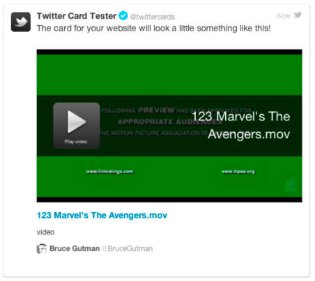

For Twitter to correctly set up your Twitter Card, you need to provide metadata about
each video; this information is in the form of HTML <meta> tags. This section
describes how to manually generate these <meta> tags for any specific video.
You will want to automate this process. Note that Flash content is no longer supported by Twitter,
which requires HTML5 content.
To add the sample code to a web page:
-
Log in to the Backlot UI.
The Backlot UI opens.
-
Open the MANAGE page.
-
Select a video.
-
Click the Embed page.
-
Note the content ID.
-
In your web browser, make the following request:
http://player.ooyala.com/twitter/meta/player_id/content_id
where player_id is the Player ID and content_id is the
Content ID on the Backlot Embed tab for this video.
A blank page is displayed.
-
View the HTML source of this blank page. In most browsers, right-click the page and select
View Page Source.
The generated <meta> tags are displayed. For example:
<meta name="twitter:card" content="player">
<meta name="twitter:title" content="123 Marvel's The Avengers.mov" />
<meta name="twitter:description" content="video">
<meta name="twitter:image" content="http://ak.c.ooyala.com/B5aDU0NjrcNyJKEEAPvqsFAKuJ-VLxLt/Ut_HKthATH5eww8X4xMDoxOjBhOzV3Va">
<meta name="twitter:player" content="https://player.ooyala.com/tframe.html?ec=B5aDU0NjrcNyJKEEAPvqsFAKuJ-VLxLt&pbid=MzZiMzc1ZDUzZGVlYmMxNzA3Y2MzNjBk">
<meta name="twitter:player:width" content="435">
<meta name="twitter:player:height" content="251">
Note: If you have advanced options for your player, such as ad tags, you need to
replace the basic URL highlighted above. See Advanced Player Options in Twitter Cards.
-
Copy the returned <meta> tags into a text editor.
-
Add the following to the end of the <meta> tags:
<meta name="twitter:site" content="@username">
where username is your Twitter ID.
-
To test the <meta> tags, open the following URL: https://dev.twitter.com/docs/cards/validation/validator.
The Preview Your Twitter Card page appears.
-
Enter the meta into twitter's Standard Tags field and click
Preview Card.
Twitter returns a preview.

-
Continue to the next procedure.